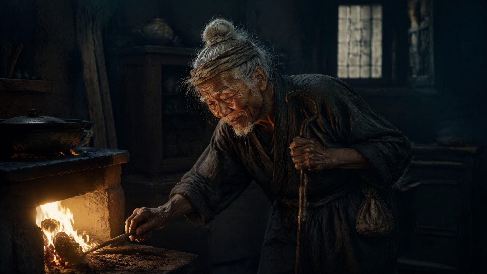

传火

火焱是永乐十八年那年，开始交代后事的。
他自己清楚，日子不多了。七十三了，头发全白，背驼得厉害，走路要拄着拐。可每天早上，他还是照旧，天不亮就起来，摸到老屋的灶前，添一把柴，把火拨旺。这个动作他做了一辈子，从九岁到七十三，六十四年，一天没断。
“爷爷，您歇着，我来。”火承已经三十多了，如今是百曲义学的先生。他每天也起得早，可总是比爷爷晚一步。
“你来。”火焱把火钳递给孙子，自己蹲到一旁，看着火承熟练地添柴、拨火、看火候。火光映着两代人的脸。
“承儿，”火焱忽然说，“爷爷这一辈子，最不放心的，不是火家的田，不是火家的书，是这口灶。”
“灶有什么不放心的？”
“灶是死的，火是活的。”火焱说，“添柴的时机，拨火的力道，火候的老嫩——这些，书本上教不会，得一代一代，手把手地传。你爹走得早，你这些，是爷爷一手教出来的。可你往后，要教给你儿子，你儿子再教给他儿子。”他顿了顿，“火家可以没船，可以没官，可以没银子——就是不能没一个会烧灶的人。”
“孙儿明白。”火承说。
“你明白个屁。”火焱笑了，“你现在的火候，只能烧饭。爷爷说的烧灶，是烧火家这口灶——往大了说，是烧人心。”
火承抬起头，似懂非懂。
火焱颤巍巍地站起来，领着火承，在火家老屋里走了一圈。他指着墙上的黑弓：“这是你老祖宗直脱儿公的弓，射过元廷的敌人，也射过火家的仇。可如今，弓弦松了，落灰了——因为火家不用再靠弓了。”
他又指着供桌上的封坛旧砖和炉心石：“这是你老祖宗封脉的砖，和阿察儿一支守了七十年的火。火家从蒙古赤氏，烧成江南火氏，靠的不是血脉，是'归'——归汉，归家，归灶。”
最后，他走到义学的院子里，指着满院的孩子们：“这就是火家的火。”
火承站在院子里，看着那群读书的孩子，忽然就懂了。
“爷爷，”他说，“火家的火，不是灶膛里那团火。”
“是什么？”
“是这些孩子。”火承说，“是一代一代，从火家义学里走出去的人。他们走到哪儿，火家的火就烧到哪儿。”
火焱笑了，笑得眼角的皱纹挤成了一朵花。
“对喽。”他说，“火家的火，从来不是丹田里那团八色火焰。那八色火，烧的是兵戈，烧的是权谋，烧的是火焱一个人的路。可火家真正的火，是这一间义学，是这一片灶田，是这一群读书的孩子。”他顿了顿，“你九岁那年，爷爷就该想通这个。如今七十三了，才想明白——晚了，可也不晚。”
那天夜里，火焱坐在灶前，闭上眼。
他听见系统之声，最后一次响起。那声音不再是“老夫”的苍老，也不再是柴火燃尽的轻响——是一个极平和、极安静的声音，像是灶膛里那团烧了六十四年的火，最后安稳地落了下来：
“赤火九转·第九转·祖境——达成。你不再需要火，火也不再需要你。火家的火，已经在百曲每一户人家的灶里，在义学每一个孩子的书里，在你自己心里，各自烧着了。”
“从今往后，你不再是持火的人。你是火的源头。赤火祖境，不是火强到了尽头——是你这个人，成了火。”
火焱睁开眼。灶膛里的火，赤红赤红地跳着，还是那团火。可他知道，不一样了。
六十四年前，他指着这团火，对刀口下的兵头子说“姓火”。
六十四年后，他坐在这团火前，把“火”这个字，交到了孙子手里。
“承儿，”他轻声喊。
“爷爷。”
“火，爷爷传给你了。不是火种，不是功法——是灶，是书，是心。”他说，“往后，火家没有火焱了。可火家的火，会一直烧下去。”
火承跪在灶前，重重地磕了一个头。
“孙儿，接住了。”
灶膛里的火，噼啪地响了一声，爆出一小簇火星，直直地升起来，升出了烟囱，升进了夜空，和百曲千家万户的炊烟，融在了一起。
火焱望着那缕烟，忽然觉得，自己这一辈子，值了。
不是打下了多大的江山，不是攒下了多少家业。
是终于，把一团火，点成了满天星。
· 第五卷《祖境》 ·